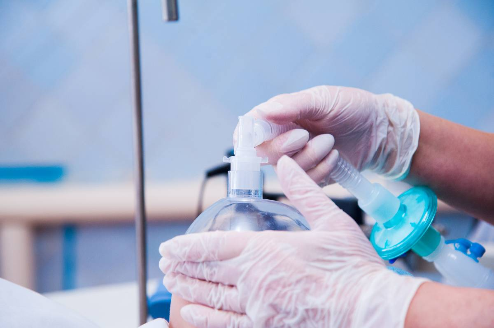

Inhalational anesthetics represent a group of medications used to induce and maintain general anesthesia during surgical procedures. These drugs enter through the respiratory system via mask or breathing tube, reaching the brain through the bloodstream to produce unconsciousness.
The history of inhalational anesthetics extends to the 19th century with ether and chloroform, though modern variants like sevoflurane, desflurane, and isoflurane offer improved safety profiles. Anesthesiologists use specialized equipment to monitor and adjust drug concentrations in real time.
When administered, the anesthetic diffuses through the lungs into the bloodstream, suppressing central nervous system activity. This produces unconsciousness, muscle relaxation, and pain insensitivity while preventing surgical memory formation. Depth can be adjusted by changing gas concentration, providing medical teams with control and flexibility.
A key advantage involves rapid elimination—these agents are primarily exhaled unchanged through the lungs, allowing patients to regain consciousness quickly. Post-operative effects like grogginess or nausea typically resolve with supportive care.
While generally safe, potential side effects include shivering, confusion, and nausea. Serious complications remain rare but include allergic reactions and malignant hyperthermia—a rare and potentially life-threatening reaction that can cause a rapid increase in body temperature and muscle rigidity.
Environmental considerations are significant, as some inhalational anesthetics function as potent greenhouse gases. The medical community actively explores greener alternatives and improved delivery systems to minimize atmospheric waste.
Patients typically receive pre-operative sedation and explanation from their anesthesiologist. During procedures, vital signs undergo close monitoring. Recovery areas ensure safe transitions to full consciousness post-surgery.